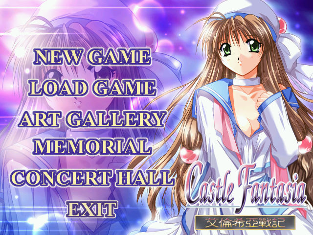
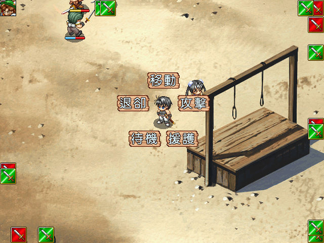

名稱：城堡幻想曲3：艾倫希亞戰記／愛倫希亞戰記 (中文版)
簡介：Studio e.go 2000年出品的即時制策略角色扮演遊戲，並帶有養成的功能，由信必優
中文化並代理發行。2003年推出「重製版／復刻版」，重繪圖片並追加女主角，可惜
信必優已倒閉，不再有繁中版，2007年有網友簡中化，並由亞昇盜版發行 [待補]。


備註：本版為1.02版
保護：光碟
備註：原版為2CD，但第二片為純欣賞用的音樂片，不屬於遊戲片。
檔案：cf3r.rar = 復刻版簡中漢化版